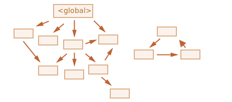
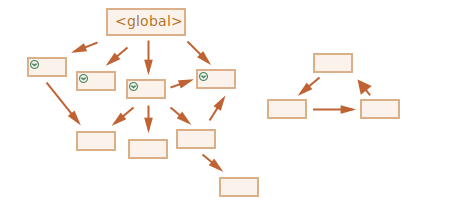
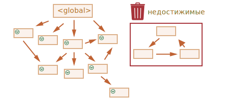

Внутренние алгоритмы
Основной алгоритм сборки мусора называется «алгоритм пометок» (от англ. «mark-and-sweep»).
Согласно этому алгоритму, сборщик мусора регулярно выполняет следующие шаги:
- Сборщик мусора «помечает» (запоминает) все корневые объекты.
- Затем он идёт по ним и «помечает» все ссылки из них.
- Затем он идёт по отмеченным объектам и отмечает их ссылки. Все посещённые объекты запоминаются, чтобы в будущем не посещать один и тот же объект дважды.
- …И так далее, пока не будут посещены все достижимые (из корней) ссылки.
- Все непомеченные объекты удаляются.
Например, пусть наша структура объектов выглядит так:
Мы ясно видим «недостижимый остров» справа. Теперь давайте посмотрим, как будет работать «алгоритм пометок» сборщика мусора.
На первом шаге помечаются корни:
Затем помечаются объекты по их ссылкам:
…А затем объекты по их ссылкам и так далее, пока это возможно:
Теперь объекты, которые не удалось посетить в процессе, считаются недостижимыми и будут удалены:
Мы также можем представить себе этот процесс как выливание огромного ведра краски из корней, которая течёт по всем ссылкам и отмечает все достижимые объекты. Затем непомеченные удаляются.
Это концепция того, как работает сборка мусора. Движки JavaScript применяют множество оптимизаций, чтобы она работала быстрее и не задерживала выполнение кода.
Вот некоторые из оптимизаций:
- Сборка по поколениям (Generational collection) – объекты делятся на два набора: «новые» и «старые». В типичном коде многие объекты имеют короткую жизнь: они появляются, выполняют свою работу и быстро умирают, так что имеет смысл отслеживать новые объекты и, если это так, быстро очищать от них память. Те, которые выживают достаточно долго, становятся «старыми» и проверяются реже.
- Инкрементальная сборка (Incremental collection) – если объектов много, и мы пытаемся обойти и пометить весь набор объектов сразу, это может занять некоторое время и привести к видимым задержкам в выполнения скрипта. Так что движок делит всё множество объектов на части, и далее очищает их одну за другой. Получается несколько небольших сборок мусора вместо одной всеобщей. Это требует дополнительного учёта для отслеживания изменений между частями, но зато получается много крошечных задержек вместо одной большой.
- Сборка в свободное время (Idle-time collection) – чтобы уменьшить возможное влияние на производительность, сборщик мусора старается работать только во время простоя процессора.
Существуют и другие способы оптимизации и разновидности алгоритмов сборки мусора. Но как бы мне ни хотелось описать их здесь, я должен воздержаться, потому что разные движки реализуют разные хитрости и методы. И, что ещё более важно, все меняется по мере развития движков, поэтому изучать тему глубоко «заранее», без реальной необходимости, вероятно, не стоит. Если, конечно, это не вопрос чистого интереса, тогда для вас будет несколько ссылок ниже.